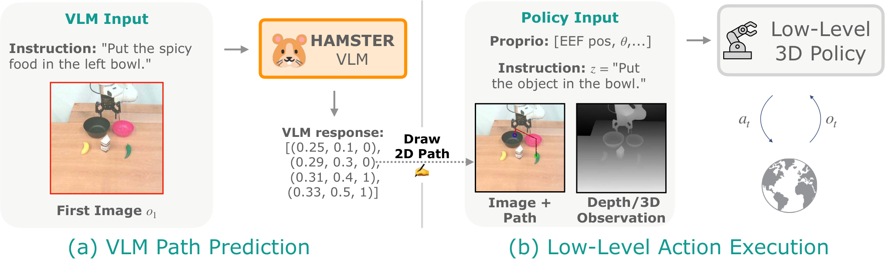
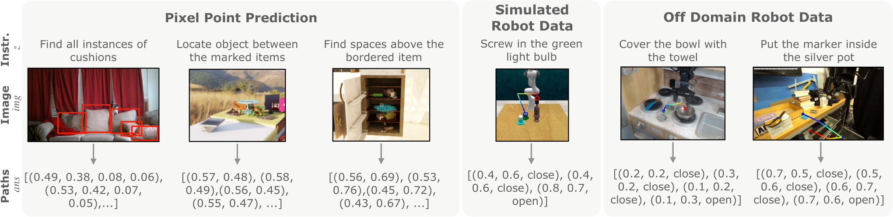
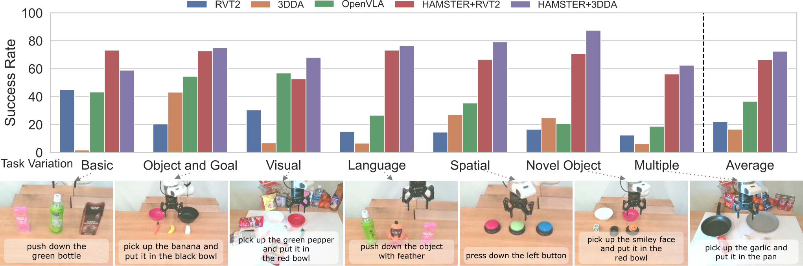
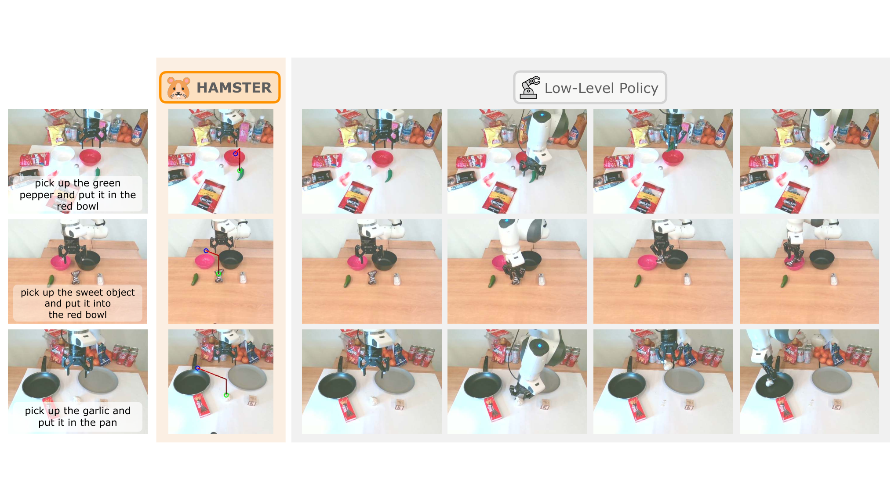
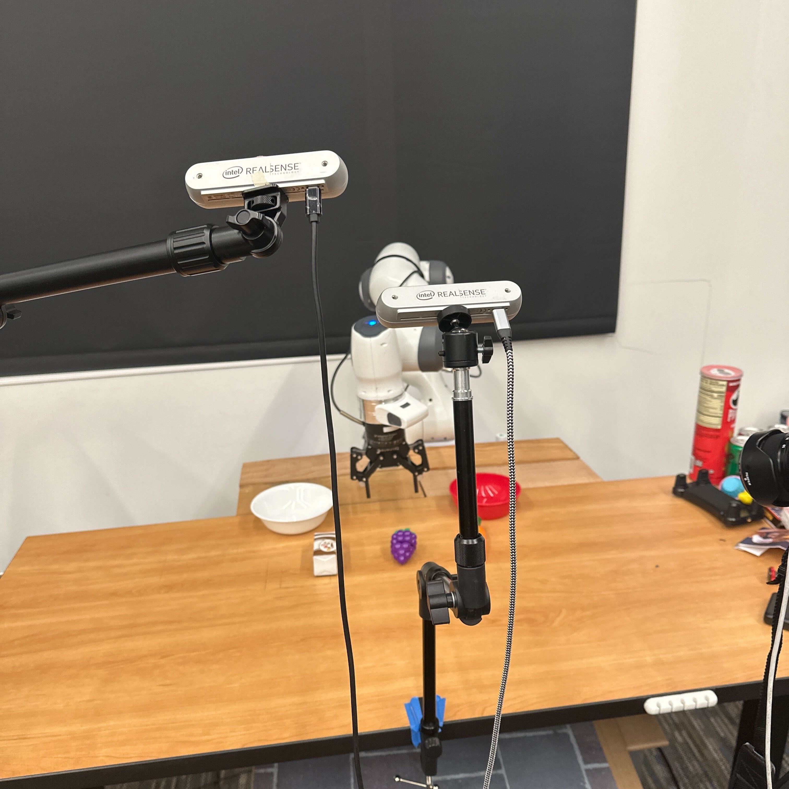
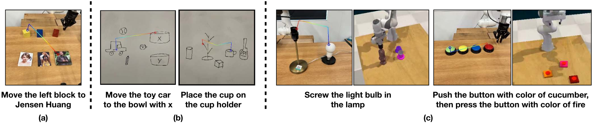

HAMSTER: Hierarchical Action Models For Open-World Robot Manipulation
Yi Li, Yuquan Deng, Jesse Zhang, Joel Jang, Marius Memmel, Raymond Yu, Caelan Reed Garrett, Fabio Ramos, Dieter Fox, Anqi Li, Abhishek Gupta, Ankit Goyal · NVIDIA · University of Washington · University of Southern California
제출: 2025년 2월 8일 (v1) / 최종 개정 2025년 5월 10일 (v4) · 백본 VILA-1.5-13B · Franka 실로봇
한 줄 요약 (TL;DR)
로봇용 VLA(Vision-Language-Action, 이미지+지시문 → 관절/그리퍼 액션 모델)가 값싼 "off-domain 데이터"(실 로봇 액션 라벨이 없는 인간 영상, 시뮬레이션, 다른 로봇 데이터)를 잘 흡수하지 못하는 문제를 계층 분리로 푼다. 상위 VLM(vision-language model)은 "다음에 그리퍼가 지나갈 2D 경로(이미지 평면 위 픽셀 궤적)와 open/close 시점"만 예측하고, 하위 3D-aware 정책이 이 경로를 조건으로 실제 관절 액션을 낸다. 이 분리 덕분에 상위 VLM은 실로봇 액션 라벨 없이도 학습 가능. 결과: 7개 일반화 축 평균 +20%p 성공률 향상(OpenVLA 대비 상대 50% 향상), Colosseum 시뮬 벤치 평균 0.46 vs 3D-DA 0.35, 데이터 50%로 3D-DA 100% 성능의 2배.
1배경 · 문제의식
비전·언어에서는 파운데이션 모델이 open-world 일반화(학습 때 못 본 물체·장면·지시에도 통함)를 보이지만, 로봇은 그렇지 못하다. 근본 원인은 on-robot 데이터 부족 — 실 로봇을 사람이 원격조종해서 모으므로 매우 비싸다. 자연스런 처방은 off-domain 데이터(액션 없는 인간 영상, 손그림 스케치, 시뮬레이션 등)의 활용이지만, 이런 데이터는 액션 라벨이 없거나 다른 도메인이라 "관측→관절 각도" 매핑으로 직접 학습되는 단일(monolithic) VLA는 이득을 거의 못 받는다. 실제로 저자들이 OpenVLA를 RLBench(시뮬) 데이터로 파인튜닝해 실환경에 배치한 실험에서 성공 점수는 0.54 vs 0.58로 사실상 개선이 없다.
HAMSTER의 통찰: 액션 대신 중간 표현(2D 경로)을 예측하는 상위 VLM을 두면, 이 표현은 인간 영상·시뮬·타 로봇에서 모두 저렴하게 얻을 수 있어 off-domain 데이터를 진짜로 활용할 수 있다.
2핵심 Contribution
Hierarchical VLA 아키텍처 — 상위 VLM은 2D 경로(픽셀 궤적 + gripper open/close 이벤트)만 예측하는 "계획자"로, 하위 3D-aware 정책은 그 경로를 시각/기하 신호와 함께 받아 실제 관절 액션을 내는 "실행자"로 분리. 두 레벨을 독립 데이터로 학습.
Off-domain 데이터 통합 레시피 — RoboPoint(픽셀 포인트 QA, 770K) + RLBench(시뮬 81태스크, 320K) + Bridge/DROID(다른 로봇 real, 110K) + 일반 VQA(660K) 공동학습으로, 실로봇 액션 라벨 0장으로도 상위 VLM 학습 가능.
강건한 일반화 실증 — 실로봇 74 태스크·222 평가에서 7개 일반화 축(미본 물체·목표·시각·언어·공간·신규물체·복합) 평균 +20%p(상대 50%↑) 대 OpenVLA, 3D 정책 단독 대비 평균 3배 이상, Colosseum 시뮬 15개 교란 대부분 우위.
3Method
3.1 전체 구조 — 상위 "경로 계획자" + 하위 "경로 추종자"
왜: 로봇 액션(관절 토크·엔드이펙터 6DoF)은 도메인에 강하게 묶이지만, "이미지 위 어디로 손이 지나가는가"는 인간 영상이나 시뮬 모두에서 쉽게 얻어진다. HAMSTER는 이 도메인 중립적 중간 표현인 2D 경로를 매개로 상하 계층을 잇는다.
구체적으로 2D 경로 p는 시간 순 리스트 p = [(xt, yt, gripper_opent)]t. 여기서 (xt, yt)는 [0,1]로 정규화된 픽셀 좌표(엔드이펙터가 이미지에 투영된 위치)이고 gripper_opent는 그 시점의 그리퍼 개/폐 여부.
3.2 상위 VLM 경로 계획자
백본은 VILA-1.5-13B(130억 파라미터 vision-language 모델). 입력은 RGB 이미지 img와 언어 지시 z, 출력은 텍스트 형태로 인코딩된 경로 answer(예: 좌표 시퀀스). 지도학습 목적은 정답 경로의 log-likelihood 최대화:
목적함수: E(imgi, zi, ansi)~Doff[log VLM(ansi | imgi, zi)]
Doff는 실로봇 액션 라벨을 포함하지 않는 off-domain 데이터. VLM은 오직 "이 지시에 대해 손이 지날 픽셀 궤적"만 배운다.
왜 2D인가: 3D 궤적은 카메라 캘리브레이션·깊이가 필요해 도메인 종속적이지만, 2D 픽셀 좌표는 사전학습된 VLM의 시각적 grounding 능력(예: "이 그림에서 컵이 어디?")과 자연스럽게 맞물린다.
경로 단순화(Ramer-Douglas-Peucker): 100 스텝을 넘는 긴 궤적은 RDP 알고리즘(선분 근사로 중요 꺾임점만 남기는 다각선 단순화)으로 압축. 이로써 VLM은 세부 흔들림 대신 "고수준 경유점" 시퀀스를 예측.
세계 지식 유지: 로봇 데이터만으로 파인튜닝하면 VLM이 일반 QA 능력을 잃는 catastrophic forgetting 위험이 있어, 일반 VQA 660K 샘플을 함께 학습. Table 4에서 15개 표준 VQA 벤치 성능이 VILA-1.5-13B 원본과 거의 동일(예: MME 1569.6 → 1588.4, MMBench 74.9 → 75.3).
3.3 Off-domain 학습 데이터 (Doff)
RoboPoint
770K 픽셀 포인트 QA — "표시된 물체 사이 위치 찾기"류. 시각적 grounding 능력의 기초.
RLBench (시뮬)
320K 샘플, 81 태스크 × 1000 에피소드 × 언어 4종. 시뮬레이터의 자체 플래너로 액션 궤적을 만들고 순기구학(forward kinematics)으로 엔드이펙터 3D 위치 → 카메라 투영해 2D 경로 생성.
Bridge (WidowX)
10K real 궤적. 다른 로봇 팔이지만 proprioception + 카메라 파라미터로 2D 경로 추출.
DROID
45K real 궤적. 동일 방식으로 2D 경로 추출.
일반 VQA
660K, 세계 지식/시각 이해 유지용.
3.4 하위 3D-aware 정책 (경로 추종자)
선택지: RVT-2(멀티뷰 랜더링 기반 로봇 트랜스포머) 또는 3D Diffuser Actor (3D-DA)(포인트 클라우드 기반 확산 정책). 입력은 (자기수용감각 s, RGB+포인트 클라우드 o, 언어 z, 예측 경로 p), 출력은 액션 a. 목적함수는 표준 모방학습(behavior cloning):
경로 주입 방식 2가지: (1) Overlay — RGB 위에 시간에 따라 색이 변하는 궤적을 그려 넣음(모든 아키텍처 호환), (2) Concatenation — 별도 채널로 붙임(RVT-2는 6채널 입력).
학습 데이터 Dpath: Franka 팔로 원격조종 320 에피소드. 학습 시 proprioception 투영으로 오라클 2D 경로를 만들어 (s,o,z,p,a) 튜플을 구성.
왜 계층 분리가 속도에도 유리한가: VLM(130억 파라미터)은 에피소드당 1~수회만 호출, 하위 정책이 이 경로를 따라 고주파로 액션 산출 → 실시간 제어 가능.
4실험 결과
4.1 실로봇 (Franka + depth camera, 74 태스크·222 평가)
320 에피소드로 하위 정책 학습, 상위 VLM은 in-domain 데이터 0장. 7개 일반화 축: obj/goal(미본 조합), visual(질감/조명/방해 물체), language(예: "candy"→"sweet object"), spatial(공간 관계), novel object(전혀 새 물체), multiple(복합), 기본 in-distribution. 태스크는 pick-and-place, 버튼 누르기, 물체 넘어뜨리기 등 prehensile/non-prehensile 혼합.
OpenVLA(7B monolithic, in-domain 파인튜닝) 대비 평균 +20%p 성공률 향상, 상대 50%↑
2D 경로 없는 3D 정책(RVT-2·3D-DA 단독) 대비 평균 3배 이상
7개 축 모두 일관 개선
OpenVLA + RLBench 파인튜닝 대조: RLBench 81태스크 데이터로 OpenVLA를 추가 파인튜닝해도 real pick-and-place 6태스크 성공 점수 0.54 vs 0.58(개선 없음). 저자 결론: "monolithic VLA는 RLBench 데이터에서 거의 이득을 못 얻는다".
4.2 카메라 뷰 불변성 (Table 2)
모델
Original Cam · Success
Original Cam · Complete
Novel Cam · Success
Novel Cam · Complete
OpenVLA
0.60
0.30
0.23
0.00
HAMSTER + RVT-2
0.83
0.70
0.73
0.40
HAMSTER + RVT-2 (Concat)
1.00
1.00
0.98
0.90
10 trial · 학습 시 본 물체 6종 + 컨테이너 3종. OpenVLA는 새 카메라 각도에서 완전 실패(complete=0), HAMSTER-Concat은 거의 무너지지 않음.
4.3 Colosseum 시뮬 벤치 (Table 3, 3D-DA 백본)
Variation
3D-DA
HAMSTER + 3D-DA
No variation (avg)
0.35±0.04
0.46±0.04
Background texture
0.43±0.06
0.57±0.03
Camera position
0.34±0.07
0.48±0.08
Manipulated obj texture
0.27±0.04
0.48±0.06
Manipulated obj size
0.41±0.04
0.57±0.08
Table texture
0.23±0.04
0.35±0.07
Receptacle obj texture
0.36±0.12
0.56±0.09
RLBench/Colosseum color
0.07±0.03
0.11±0.10
전 15개 교란 축에서 우위. 평균 +31%p. 특히 텍스처·크기 교란에서 큰 폭 개선.
4.4 데이터 효율 (Table 1)
HAMSTER + 3D-DA (데이터 50%): 0.36±0.04
HAMSTER + 3D-DA (데이터 100%): 0.43±0.05
3D-DA 단독 (데이터 100%): 0.18±0.10
"50% 데이터로 3D-DA 100% 성능의 2배" — 상위 VLM의 경로 유도가 하위 정책의 샘플 효율을 극적으로 높인다.
4.5 VQA 유지 (Table 4)
15개 표준 VQA 벤치에서 원본 VILA-1.5-13B와 성능이 사실상 동일 — VQAv2 82.8→82.9, GQA 64.3→64.9, MME 1569.6→1588.4, MMBench 74.9→75.3. 로봇 태스크에 특화되지 않고 범용 VLM으로 남는다.
5Ablation (주요 발견)
Off-domain 데이터의 각 구성요소가 중요: RLBench(시뮬)를 빼거나 Bridge/DROID(타 로봇)를 빼면 실로봇 성능이 하락. 특히 시뮬 데이터 포함이 real-world 성능을 실측 개선.
RDP 단순화의 필요성: 100 스텝 넘는 원본 궤적을 그대로 예측시키면 VLM 학습이 취약해짐 — RDP로 꺾임점만 남기면 고수준 추론이 살아난다.
OpenVLA는 시뮬 데이터를 못 흡수: 앞서 언급, 0.54 vs 0.58. 계층 분리가 없으면 off-domain 데이터가 무용지물임을 반증.
6핵심 Figure / Table

Figure 2 — HAMSTER method. 상위 VILA-1.5-13B는 이미지·지시로 2D 경로(픽셀 궤적 + gripper open/close)를 예측, 하위 3D-aware 정책(RVT-2 또는 3D-DA)이 경로를 조건으로 실제 관절 액션을 낸다. 상위는 off-domain 데이터, 하위는 소량 in-domain 데이터로 각기 학습. (출처: arXiv:2502.05485)

Figure 3 — Off-domain training data mix. RoboPoint 픽셀 포인트 QA(770K) + RLBench 시뮬(320K) + Bridge/DROID(110K) + 일반 VQA(660K). 상위 VLM은 이 조합으로 학습하며 실로봇 액션 라벨은 전혀 사용하지 않는다. (출처: arXiv:2502.05485)

Figure 4 — Real-world quantitative results. 7개 일반화 축(obj/goal, visual, language, spatial, novel object, multiple, in-dist) 전반에서 HAMSTER는 OpenVLA 대비 평균 +20%p(상대 50%↑), 3D 정책 단독 대비 3배 이상. (출처: arXiv:2502.05485)

Figure 5 — Real robot policy rollouts. pick-and-place, 버튼 누르기, 물체 넘어뜨리기 등 prehensile/non-prehensile 태스크 롤아웃 스냅샷. (출처: arXiv:2502.05485)

Figure 6 — Novel camera viewpoint. 학습 시 본 적 없는 카메라 각도에서도 HAMSTER + RVT-2 (Concat)이 성공률/완료율을 유지(0.98/0.90) vs OpenVLA(0.23/0.00). 2D 경로가 카메라 뷰 변화의 강건성을 부여. (출처: arXiv:2502.05485)

Figure 7 — VLM generalization examples. 다양한 지시·물체에 대한 상위 VLM의 2D 경로 예측 정성 사례. (출처: arXiv:2502.05485)
Table 3 (Colosseum) — 15개 시뮬 교란 축 전반에서 3D-DA 대비 우위. 평균 0.35 → 0.46 (+31%). 특히 텍스처·크기 교란에서 큰 개선. HAMSTER의 시각적·기하학적 일반화 주장의 정량 근거.